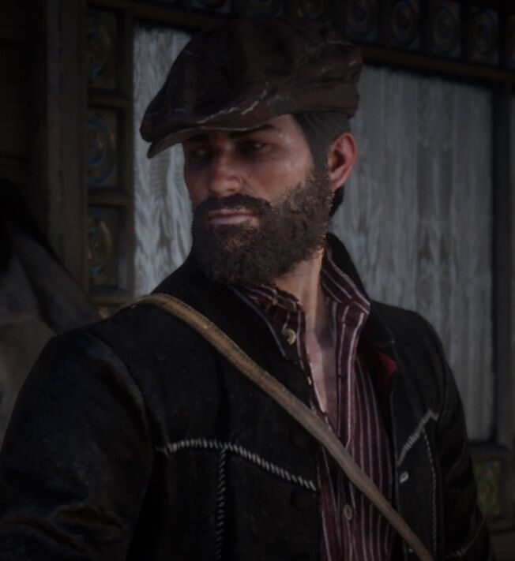

İçerik
Info1(Resim)
Metin
John Marston, Rockstar Games'in oluşturduğu Red Dead video oyunu serisindeki kurgusal karakterdir. 2010 video oyunu Red Dead Redemption'ın oynanabilir kahramanıdır, Vahşi Batı'nın son dönemlerinde, ailesinin federal hükûmet tarafından alıkonmasıyla birlikte onları kurtarmak için karşılığında üyesi olduğu eski çetede hayatta kalan son üyelerini öldürmek veya hapsetmek zorunda kalır. John'un hayat kadını olan annesi doğum sırasında öldü. Kör olan babası ise bir bar kavgasında, John henüz sekiz yaşındayken öldürüldü. John birkaç yıl yetimhanede kaldıktan sonra oradan kaçtı. John, 12 yaşında hırsızlık yaparken yakalandıktan sonra linç edilmekle tehdit edildiğinde, onu çetesine alan Dutch van der Linde tarafından kurtarıldı.
Info2(Resim)